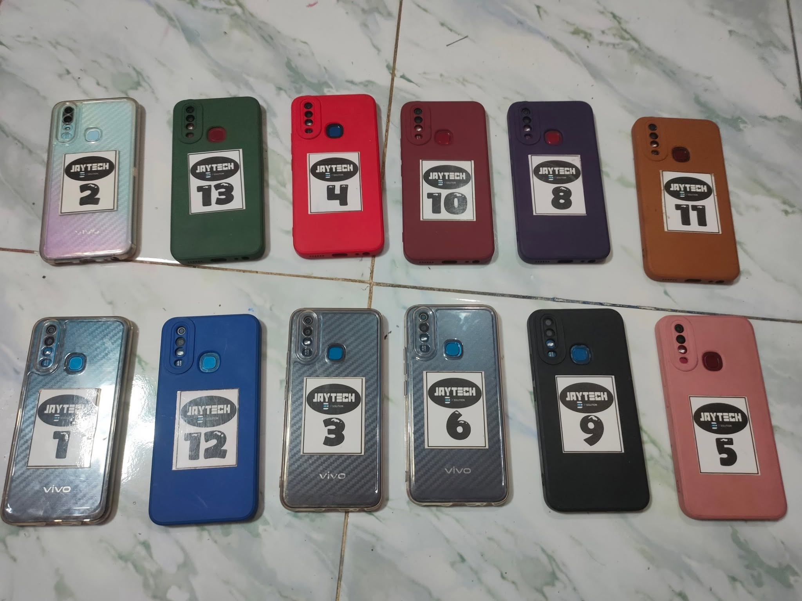
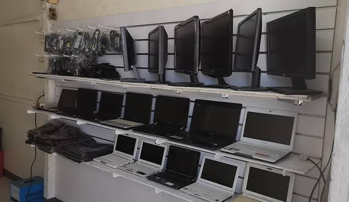
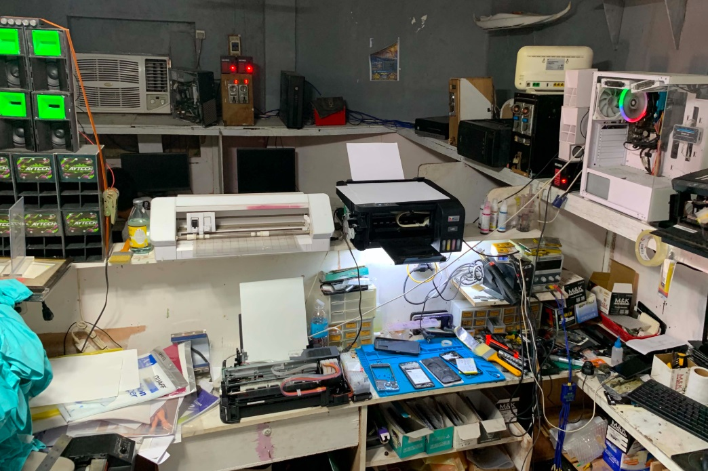

Cellphone Repair
Dili mo-charge, guba ang screen, problema sa battery, software ug uban pang common issues.
Tan-awa ang detalye →Cellphone, laptop, desktop ug uban pang gadgets. I-describe ang problema aron matabangan ka namo sa pagsusi ug pag-ayo.
Depende sa kondisyon sa unit ug availability sa piyesa, atong susihon ang mahimo.

Dili mo-charge, guba ang screen, problema sa battery, software ug uban pang common issues.
Tan-awa ang detalye →
Hinay nga performance, boot issues, upgrade, cleaning ug troubleshooting.
Tan-awa ang detalye →
Pag-assess ug repair sa ubang compatible nga electronic devices.
Tan-awa ang detalye →Tulo ka sayon nga lakang.
Ihatag ang brand, model ug unsay symptoms sa unit.
Atong susihon ug i-explain ang posibleng repair ug bayranan.
Mo-proceed lang human masabotan ang repair, parts ug presyo.
I-email o i-message mi sa Facebook uban ang model ug concern.